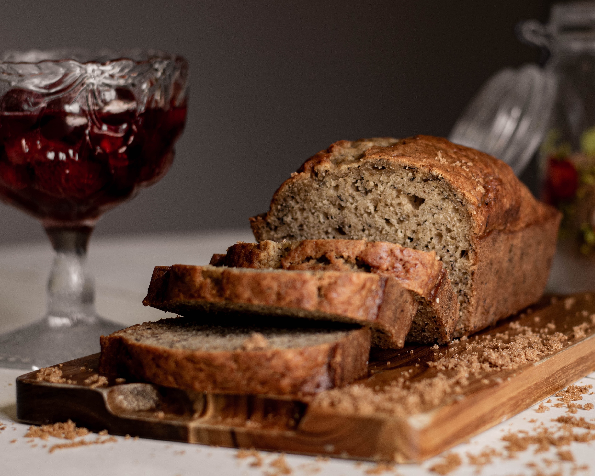

Odin Recipes

Banana Bread
The Banana Bread, a timeless classic, is a delightful, soft, and aromatic treat that captivates the palate with its irresistible banana flavor.
Perfect for breakfast, a snack, or as a sweet treat to share with friends, this dessert is easy to prepare and lends itself to endless variations. Discover our recipe for a Banana Bread that will win the hearts of all homemade sweets enthusiasts
Ingredients:
- 3 ripe bananas
- 2 cups of flour
- 1 teaspoon of baking soda
- 1/2 teaspoon of salt
- 1/2 cup of melted butter
- 1 cup of sugar
- 2 eggs
- 1 teaspoon of vanilla extract
- 1/2 cup of Greek yogurt
- 1/2 cup of chopped nuts (optional)
- Powdered sugar for finishing (optional)
Steps:
- Preheat the oven to 180°C and grease a loaf pan.
- In a large bowl, mash the bananas with a fork until creamy.
- Add melted butter to the mashed bananas and mix well.
- Incorporate sugar, eggs, vanilla extract, and Greek yogurt into the bowl. Mix until you achieve a homogeneous mixture.
- In another bowl, sift flour, baking soda, and salt. Gradually add these dry ingredients to the banana mixture, stirring gently.
- If you want to enhance your Banana Bread, add chopped nuts and mix well.
- Pour the batter into the prepared pan and smooth it with a spatula.
- Bake in the preheated oven for about 60-70 minutes or until a toothpick inserted into the center comes out clean.
- Once baked, let the Banana Bread cool in the pan for a few minutes, then transfer it to a rack to complete cooling.
- If desired, dust powdered sugar on top for a delicious finish.